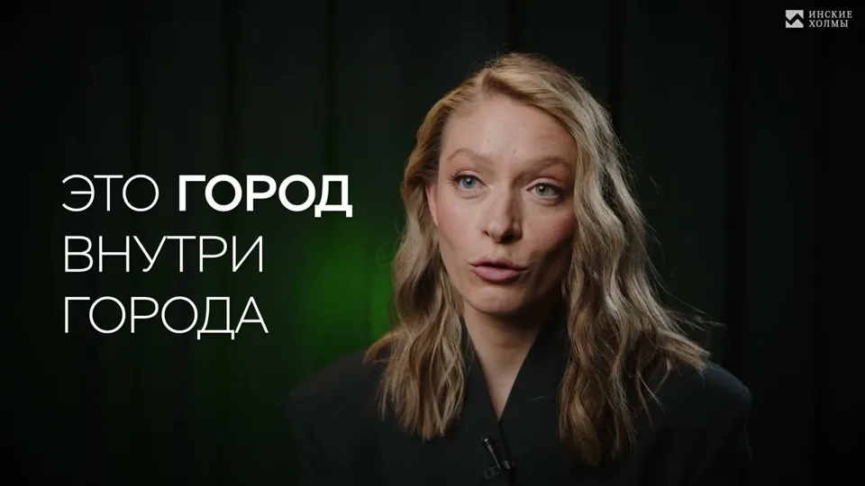

Сити-квартал «Инские холмы»
Девелопмент · фильм об объекте
Инские холмы: квартал глазами его резидентов
Арендаторам и покупателям важны не только метры, но и деловая среда вокруг. Мы показали сити-квартал через предпринимателей, которые там работают: интервью с резидентами, архитектура, лобби и панорамные кадры у воды.